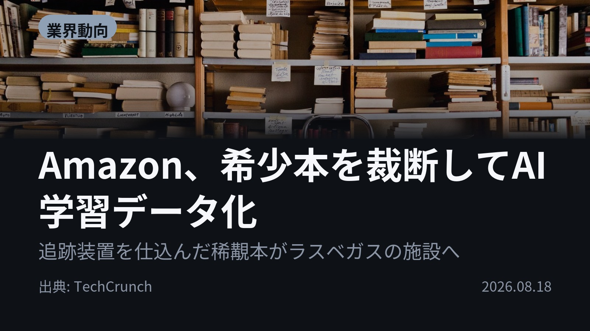
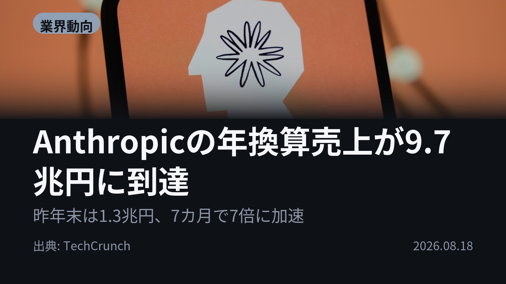
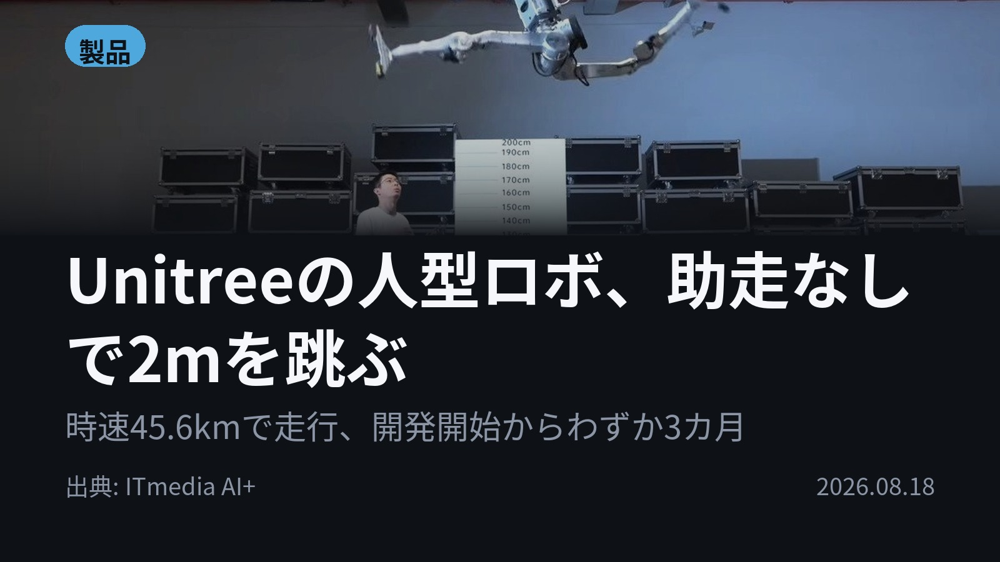
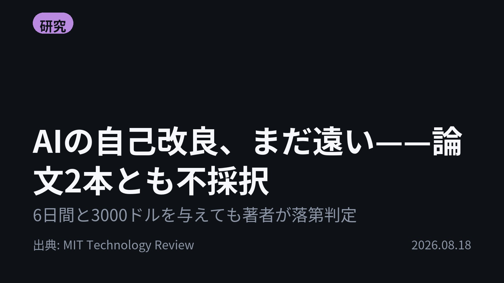

今日のAIニュース 下書き
2026-08-18 生成 08/19 03:53
⚠ 予備のLLM（ollama）で生成されました。
主バックエンドが使えなかったため、原稿の品質が普段より落ちている
可能性があります。いつもより念入りに確認してください。
理由: claude_code: claude -p が失敗しました (exit=1): API Error: 529 Overloaded. This is a server-side issue, usually temporary — try again in a moment. If it persists, check https://status.claude.com. / success / 529 / stop_sequence
⚠ ファクト照合で要確認の項目があります。
各ニュースの警告を確認してから投稿してください。
X（4投稿）
Amazon、希少本を裁断してAI学習データ化
原題: Amazon, which started off selling books, is destroying rare texts to train AI

AmazonがAI学習のため、希少本を裁断・スキャンしています。 ネット上のテキスト枯渇に伴い、2022年以前の「人間による確実な文章」が必要とされています。これはLLMが自作の文章を学習しすぎると品質が落ちる「モデル崩壊」のリスクがあるためです。 #生成AI #Amazon (出典: TechCrunch)
重み 268 / 280（見た目 153字）
要確認:
［固有名詞］スキャン — この語が本文に見つかりません
［固有名詞］テキスト — この語が本文に見つかりません
［固有名詞］TechCrunch — この語が本文に見つかりません
Anthropicの年換算売上が9.7兆円に到達
原題: Anthropic’s annualized revenue surges to $65B

Anthropicの年換算売上が、7月末時点で650億ドルを突破しました。 これは前年同期比で大幅な加速を見せており、投資家からの注目を集めています。 ライバルOpenAIも成長していますが、特にAnthropicの急激な伸びが市場の関心を持っています。 #生成AI #Anthropic (出典: TechCrunch)
重み 262 / 280（見た目 158字）
要確認:
［数値］7月 — この数値の根拠が本文に見つかりません
［数値］650億 — この数値の根拠が本文に見つかりません
［固有名詞］ライバル — この語が本文に見つかりません
［固有名詞］TechCrunch — この語が本文に見つかりません
Unitreeの人型ロボ、助走なしで2mを跳ぶ
原題: 人型ロボが“人間超え”――助走なしで高さ2mのジャンプ、時速45kmで走行も 中国Unitreeが開発中の新モデルを公開

中国Unitreeが開発中の人型ロボットの新型モデルが公開されました。 助走なしで高さ2mのジャンプ、そして最高時速45.576kmでの走行を披露し、人類の世界記録を超えました。 開発開始からわずか3カ月というスピード感も注目されています。 #AI #Unitree (出典: ITmedia AI+)
重み 253 / 280（見た目 148字）
要確認:
［固有名詞］スピード — この語が本文に見つかりません
AIの自己改良、まだ遠い——論文2本とも不採択
原題: AI’s recursive self-improvement might not come so quickly after all

AIの自己改良は、まだ時間がかかる可能性が判明しました。 最新研究では、AIエージェントが「判断力」と「創造性」を欠き、トップカンファレンスレベルの研究論文作成が難しい実証結果が出ました。 単なる工学的なタスク解決は可能でも、独創的な研究には到達できないようです。 #生成AI #LLM (出典: MIT Technology Review)
重み 303 / 280（見た目 168字） — 上限超過。手直しが必要です
要確認:
［固有名詞］エージェント — この語が本文に見つかりません
［固有名詞］トップカンファレンスレベル — この語が本文に見つかりません
［固有名詞］オープンエンド — この語が本文に見つかりません
Instagram（カルーセル 6枚）

{kind=link}
{kind=link}
{kind=link}
{kind=link}
{kind=link}
{kind=link}
{kind=link}
{kind=link}
{kind=link}
今日のAIニュースは「限界」と「進化の加速」がテーマでした。特に、データや性能面で新たな壁に直面している様子が浮き彫りになっています。 まずはAmazonが希少本を裁断して学習データ化するという衝撃的な動きからスタートです。 1. まずTechCrunchによると、AmazonはAIの学習データ不足に対応するため、稀<0xE8><0xA6><0xAF>本の購入と裁断・スキャンを進めています。ネット上のテキストを使い尽くした結果、2022年以前の「人間が書いた確実な文章」という新たな資源に注目しているようです。(TechCrunch) 2. 次にAnthropicは驚異的な成長を見せており、年換算売上が7月末時点で650億ドルを超えました。この急激な伸びは投資家から大きな関心を集めています。(TechCrunch) 3. 製品面では、中国Unitreeが開発中の人型ロボットの新型モデルが公開されました。助走なしで2mジャンプや時速45.576km走行など、人類の世界記録を更新する性能を披露しています。(ITmedia AI+) 4. 最後にMIT Technology Reviewの記事からは、AIの自己改良（再帰的自己改善）はまだ遠いという警鐘が鳴らされています。AIエージェントは工学的な問題解決はできても、「判断力」や「創造性」が必要なオープンエンドな研究には課題があるようです。(MIT Technology Review) 今日のニュースから読み取れるのは、AIの進化が単なる性能向上だけでなく、「データ源の枯渇」「真の知性の定義」といった根本的な壁に直面しているということです。 今後の技術動向を逃さないよう、ぜひフォローしてチェックしてください！保存しておくと後で見返せます。 #AI #生成AI #人工知能 #テクノロジー #ChatGPT #Claude #LLM #Amazon #Anthropic #Unitree #TechCrunch #ITmedia #MITTechnologyReview #AI活用 #機械学習 #ロボット工学 #データサイエンス #未来技術 #DeepLearning #ArtificialIntelligence #GPT #TechNews #Innovation
977字（Instagram上限 2,200字）
この日の選定理由
Amazon、希少本を裁断してAI学習データ化
ネット上のテキストを学習し尽くしたAI企業が、2022年以前の「人間が書いた確実な文章」を求めて現物の書籍を裁断し始めた。学習データ枯渇の深刻さを示す象徴的な動きだ。
Anthropicの年換算売上が9.7兆円に到達
OpenAIの倍以上のペースで伸びており、年内に15〜18兆円の見込み。時価総額2兆ドル超を狙うIPOが今秋にも実現する可能性がある。
Unitreeの人型ロボ、助走なしで2mを跳ぶ
跳躍・走行ともに人類の世界記録を超えた。しかも開発着手から3カ月という速度が、ハードウェア進化の加速を物語る。
AIの自己改良、まだ遠い——論文2本とも不採択
エンジニアリングは完璧にこなす一方、仮説を早々に切り捨て後戻りできない弱点が判明した。再帰的自己改良の楽観的な予測に対する実証的な反証だ。